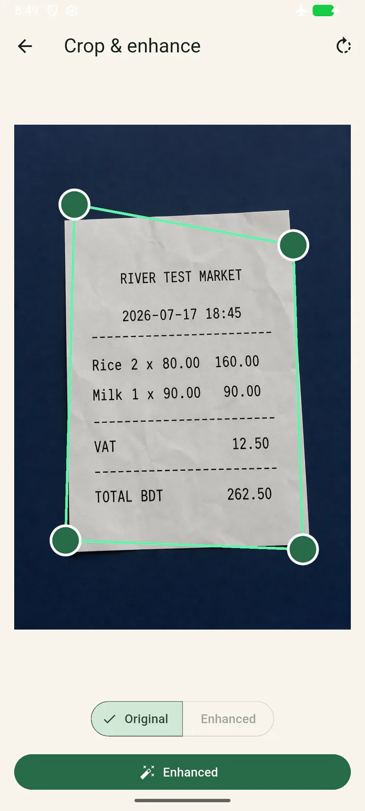
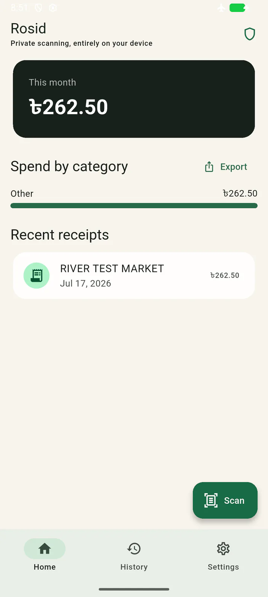
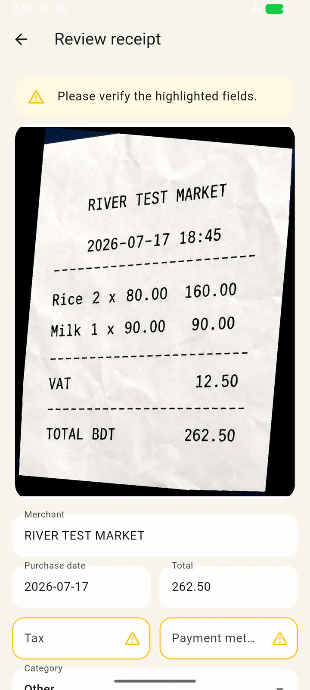
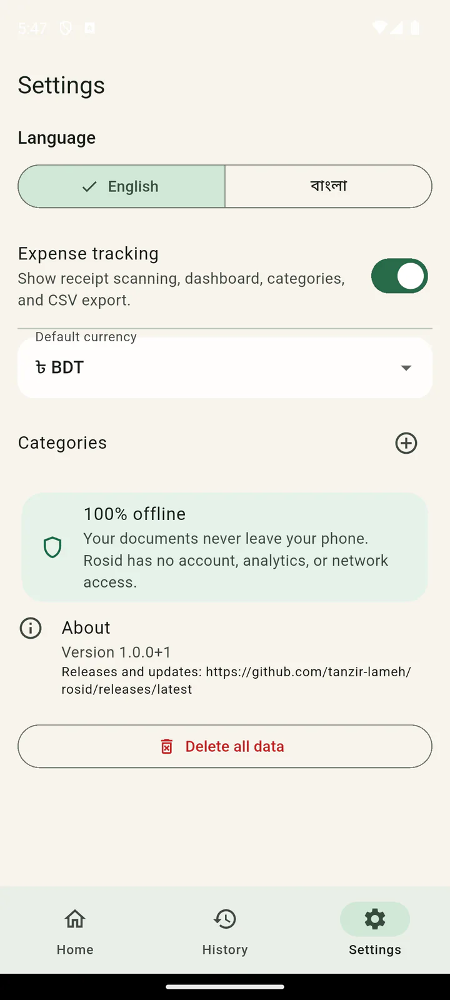

01
Scan
স্ক্যান
Capture or import. Rosid finds the edges, straightens the paper, and improves readability.
ছবি তুলুন বা আনুন। রসিদ কিনারা খুঁজে, কাগজ সোজা করে এবং পড়ার উপযোগী করে।
Offline receipt scanner for Bangladeshবাংলাদেশের জন্য অফলাইন রসিদ স্ক্যানার
Rosid turns printed Bangla and English receipts into editable expense records—entirely on your phone.
রসিদ বাংলা ও ইংরেজি মুদ্রিত রসিদকে সম্পাদনাযোগ্য খরচের হিসাবে বদলে দেয়—সবকিছু আপনার ফোনেই।
No Rosid accountরসিদ অ্যাকাউন্ট লাগে নাNo cloudক্লাউড নেইNo adsবিজ্ঞাপন নেইNo scan limitsস্ক্যানের সীমা নেই


Paper in. Clean record out.
কাগজ থেকে পরিচ্ছন্ন হিসাব
Rosid automates the repetitive parts and keeps every detected field editable before anything is saved.
রসিদ পুনরাবৃত্ত কাজগুলো করে দেয়, আর সংরক্ষণের আগে প্রতিটি শনাক্ত তথ্য সম্পাদনা করতে দেয়।

Capture or import. Rosid finds the edges, straightens the paper, and improves readability.
ছবি তুলুন বা আনুন। রসিদ কিনারা খুঁজে, কাগজ সোজা করে এবং পড়ার উপযোগী করে।
Check merchant, date, total, VAT, and items. Low-confidence text is made obvious—not hidden.
দোকান, তারিখ, মোট, ভ্যাট ও পণ্য যাচাই করুন। কম নির্ভরযোগ্য লেখা স্পষ্টভাবে দেখানো হয়।
Search your history, see monthly totals by currency, and export accountant-friendly CSV or PDF.
পুরোনো হিসাব খুঁজুন, মুদ্রাভিত্তিক মাসিক মোট দেখুন, আর CSV বা PDF এক্সপোর্ট করুন।
One private scanner, two modes
একটি ব্যক্তিগত স্ক্যানার, দুটি মোড
Built around Bangladeshi receipts, Bangla numerals, BDT totals, categories, and practical exports.
বাংলাদেশি রসিদ, বাংলা সংখ্যা, টাকার মোট, বিভাগ এবং কাজের এক্সপোর্টের জন্য তৈরি।
Batch-scan class notes, forms, handouts, and whiteboards into searchable, shareable documents.
ক্লাস নোট, ফর্ম, হ্যান্ডআউট ও হোয়াইটবোর্ড একসাথে স্ক্যান করে খোঁজযোগ্য ডকুমেন্ট বানান।
About handwriting:হাতের লেখা সম্পর্কে: V1 handwriting recognition is best effort. Rosid always lets you review and correct the text.V1-এ হাতের লেখা শনাক্তকরণ পরীক্ষামূলক। লেখা যাচাই ও সংশোধনের সুযোগ সবসময় থাকে।

Privacy you can verify
যাচাইযোগ্য গোপনীয়তা
OCR, search, expense totals, and exports run locally. The Android release manifest has no Internet permission, and the website has no analytics or trackers.
OCR, সার্চ, খরচের মোট এবং এক্সপোর্ট—সব ফোনেই চলে। Android রিলিজে ইন্টারনেট অনুমতি নেই, আর এই ওয়েবসাইটে অ্যানালিটিক্স বা ট্র্যাকার নেই।
Inspect the offline auditঅফলাইন অডিট দেখুনDirect from the source
সরাসরি উৎস থেকে
Android arrives as a signed APK; iPhone arrives as an unsigned package for user-managed signing. Each release and checksum is published together on GitHub.
Android-এর জন্য স্বাক্ষরিত APK এবং নিজের ব্যবস্থাপনায় সাইন করার জন্য স্বাক্ষরবিহীন iPhone প্যাকেজ। প্রতিটি রিলিজ ও চেকসাম একসাথে গিটহাবে প্রকাশিত হয়।
Recommended
প্রস্তাবিত
The full receipt-and-expense experience. Install the signed APK directly from Rosid’s latest GitHub Release.
সম্পূর্ণ রসিদ ও খরচের অভিজ্ঞতা। রসিদের সর্বশেষ গিটহাব রিলিজ থেকে স্বাক্ষরিত APK ইনস্টল করুন।
Download APKAPK ডাউনলোডROSID_VERSION_PLACEHOLDER · ROSID_APK_SIZE_PLACEHOLDERAutomated tests and emulator OCR checks passed. Broader physical-device testing is still pending.
স্বয়ংক্রিয় পরীক্ষা ও এমুলেটর OCR যাচাই সম্পন্ন। আরও বাস্তব ডিভাইসে পরীক্ষা এখনো বাকি।
rosid.apk from this page.rosid.apk ডাউনলোড করুন।Advanced users
অভিজ্ঞ ব্যবহারকারী
Rosid can host an unsigned iPhone package on GitHub, but Apple does not allow a normal one-tap install without Apple signing.
রসিদ গিটহাবে স্বাক্ষরবিহীন iPhone প্যাকেজ দিতে পারে, কিন্তু Apple স্বাক্ষর ছাড়া সাধারণ এক-ক্লিকে ইনস্টল সম্ভব নয়।
Download unsigned IPAস্বাক্ষরবিহীন IPA ডাউনলোডROSID_VERSION_PLACEHOLDER · ROSID_IOS_SIZE_PLACEHOLDER · iOS 15.5+You must sign the IPA with your own Apple ID using a compatible sideloading tool. Free provisioning normally expires after 7 days and must be refreshed. This is not an App Store or TestFlight build.
একটি উপযোগী সাইডলোডিং টুল দিয়ে নিজের Apple ID ব্যবহার করে IPA সাইন করতে হবে। বিনামূল্যের প্রভিশনিং প্রোফাইল সাধারণত ৭ দিন পর শেষ হয়; এরপর IPA আবার সাইন বা রিফ্রেশ করতে হয়। এটি App Store বা TestFlight বিল্ড নয়।
Verify before installing
ইনস্টলের আগে যাচাই করুন
A matching SHA-256 detects a changed or corrupted download; it is not independent proof of origin. Advanced users can also verify the APK signing certificate with apksigner.
SHA-256 মিলিয়ে ডাউনলোডের পথে ফাইল বদলেছে বা নষ্ট হয়েছে কি না বোঝা যায়; এটি উৎসের স্বাধীন প্রমাণ নয়। অভিজ্ঞ ব্যবহারকারীরা apksigner দিয়ে APK-এর সাইনিং সার্টিফিকেটও যাচাই করতে পারেন।
ROSID_APK_SHA256_PLACEHOLDERROSID_CERTIFICATE_SHA256_PLACEHOLDERROSID_IOS_SHA256_PLACEHOLDERGood to know
জেনে রাখুন
No. Recognition and storage happen on your device. The Android release does not request Internet permission.
না। লেখা শনাক্তকরণ ও সংরক্ষণ আপনার ডিভাইসেই হয়। Android রিলিজ ইন্টারনেট অনুমতি চায় না।
No. The direct GitHub build has no in-app updater, so Rosid itself never needs network access. Return to this page or watch the GitHub repository for new releases.
না। গিটহাব থেকে সরাসরি দেওয়া বিল্ডে অ্যাপের ভেতরে আপডেটার নেই, তাই রসিদের নিজস্ব নেটওয়ার্ক সংযোগও লাগে না। নতুন রিলিজের জন্য এই পেজে ফিরুন বা গিটহাব রিপোজিটরি অনুসরণ করুন।
V1 is designed primarily for printed Bangla and English. Handwriting is best effort and should always be reviewed. A dedicated on-device Bangla handwriting model is planned for V2.
V1 মূলত বাংলা ও ইংরেজি মুদ্রিত লেখার জন্য তৈরি। হাতের লেখার ফল সবসময় যাচাই করা উচিত। V2-এর জন্য বিশেষ অফলাইন বাংলা হাতের লেখা মডেল পরিকল্পিত।
Not without Apple distribution signing. The hosted IPA is for people who already understand self-signing; it requires their own Apple ID and periodic refresh.
Apple বিতরণ স্বাক্ষর ছাড়া নয়। এখানে থাকা IPA শুধু যারা নিজে সাইন করতে জানেন তাদের জন্য; নিজের Apple ID ও নিয়মিত রিফ্রেশ প্রয়োজন।